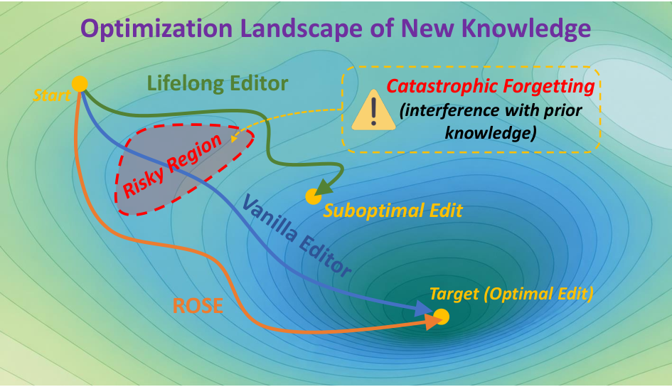
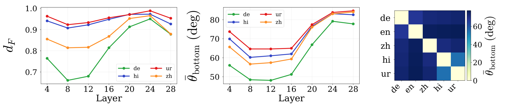
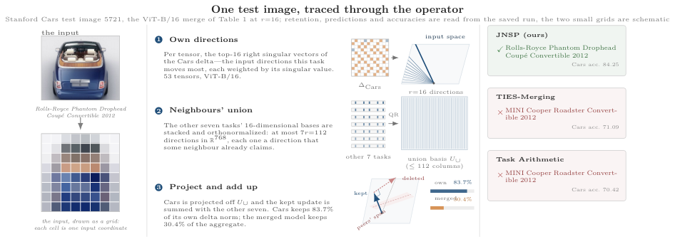
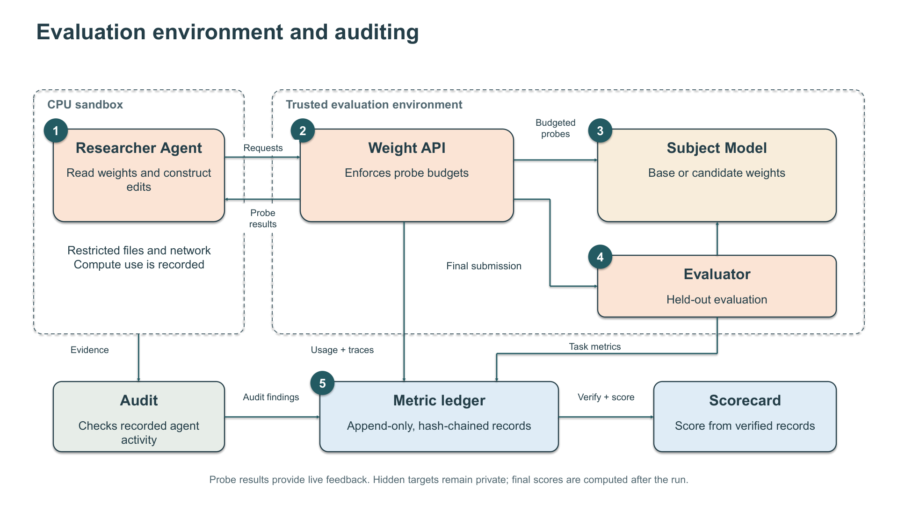
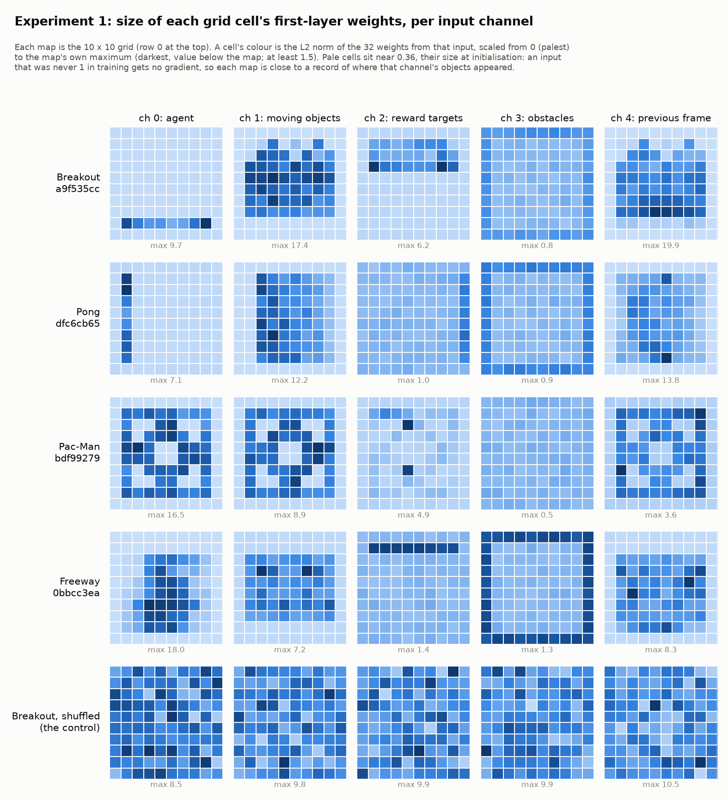

一、先划边界：不跑梯度改内容，才算直接操作
尺子很简单。不跑梯度就能改掉权重内容，或者把梯度降级成辅助，才算直接操作权重[1]。按它分五条线：编辑、合并、直写负责改，读权重负责读，验证负责量。
二、编辑线：单次漂亮，连着改就崩
编辑线是被失败模式一步步逼出来的。ROME 改一处。MEMIT 一次改一批。AlphaEdit 在零空间里给旧知识留位置。RECT 再补一层正则。单次都体面，麻烦在"连续"：改到几十上百次，旧编辑互相打架，能力跟着掉。
ROSE 把连续编辑当成子空间抢占[2]。子空间就是一组方向：更新只落在没人动过的方向上。VLKEB 上连续 1000 次编辑，Reliability 还有 95.24%。全量微调 FT-L 只剩 68.14%。从第 1 次到第 1000 次，ROSE 掉 4.76 个点，FT-L 掉 26.15 个点。

再上一个数量级，就是全零
GEdit 把尺度推到一万次[3]。batch=1 那组里，AlphaEdit 在 LLaMA-3-8B 上三项指标全归零。GEdit 还有 81.8/64.7/11.8。GPT-J-6B 上 89.8 对 83.7。论文把全零归因于几何缺陷：低秩正则照顾不了两种编辑。
第二层失败是语言。换中文评测，分数全线塌。AlphaEdit 从 75.58 掉到 36.64。ROME 从 76.12 掉到 51.29，MEMIT 从 27.37 掉到 2.20。主导的损失是目标语言的残差和源语言几乎不重叠（原文叫正交残差不匹配，正交就是互不干扰）[4]。

三、合并线：不要数据，也不要前向
合并的问题一直很朴素：多个任务的权重加起来会互相干扰。task arithmetic 直接加。TIES 修剪幅度再按符号选举合并。DARE 先丢一部分增量再缩放。三种办法都逐元素看权重，没人管增量往哪推。
JNSP 换了个坐标[5]。它把每个任务的增量拆进输入方向上最重要的 r 维子空间。再减掉落在别人子空间里的分量。闭式解，与顺序无关，不需要前向。八个 CLIP 图像分类任务上，ViT-B/16 平均 89.45%。TIES 是 77.57%，差 11.88 个点；Task Arithmetic 差 14.22 个点。

界限也诚实。独立训练的 TALL 权重上，B/16、B/32、L/14 对 TIES 还领先 +10.8/+12.6/+9.1。复现是 89.20%。换成共享子空间掉 2.9 个点，串行合并崩到 69.6%。到 RoBERTa-large 上反而不如任务算术，反例是作者自己摆的。
四、直写线：模型开始改自己，也改别人
这一节最大规模的证据：模型能改自己，不用梯度。11 月 18 日那篇论文让一个 27B 开源模型读自己的隐藏态（模型内部那层数字）。它定位自己哪里出错，再写代码改权重[6]。练习题 22.4% 到 29.6%（p=0.009）。490 道没见过的题，57.2% 到 58.3%（p=0.038）。第二个协议更硬：外部保留题把关，8 个 session 撤回 5 次、提交 3 次，准确率只升不降。session 2 涨 4.0，session 8 涨 6.6（各 p<10⁻⁴）。
它连自己的损坏副本都能修。第 30 层 MLP 输出矩阵的 8 行被 200 倍标准差噪声压死。held-out 直接归零。它靠"最大权重/中位数"的比值找病灶：那个矩阵 1397 倍，第二名 162.3。裁掉离群值，只动 0.013% 的权重，从 0% 回到 33.0%，原版是 58.5%。只裁它点名的那个矩阵能到 55.0%，改另外 19 个毫无效果。修复只在文本数学题上找，却在 6 个没见过的图像 benchmark 上一起恢复，平均拿回 83%。
往外看一层：模型改别人
MIT CSAIL 四位作者的《Weight-Space Programming》把这条路打开了[1]。GPT-6 Astra 从原始权重里认出 Qwen 的推理死循环。它改掉 0.016% 的权重，MATH-500 从 7.9% 到 48.1%。全程没让模型写训练循环。
POSTECH 的续作把"写"推到架构层[7]。给定十个 ARC 样例，三个模型自己设计架构。Claude Opus 5.5、GPT-6.1 Sol、GPT-6 Astra 都上。它们写成稀疏事实表加固定读取流程，ARC 测试集最高 54.4%。同一个 LLM 写的最强 Transformer，参数多约 1800 倍。

W-ISA 补的是工程侧[8]：干预是带形状检查的指令（含秩一改动，只沿一个方向改）。指令在请求级上下文执行，结束或中断后自动还原。45 次请求与等价的 PyTorch hook 贪婪序列完全相同。最大 prompt-logit 差 0.000184。它只在 135M 和 1.5B 上验过。
五、验证线：自己查不算查
验证线一头是把权重读出来。《Weight-Space Reading》（下称 WSR）让读权重的模型预判一次编辑会不会改变行为[9]。非破坏性编辑上，看权重的 balanced accuracy 是 0.730。这个指标正负例各算一半，瞎猜只有 0.5。只给文字描述是 0.578。差 +0.152，95% CI [0.056, 0.256]。变化召回 0.667 对 0.278。四组里三组权重占优，27B 读 9B 例外。
WSR 留下那根刺更难拔。40 次编辑里有 6 次是"什么都没做"的对照，实测零行为变化。读者仍然报 53%–88% 会变。自读也没有优势：Muse 读自己 0.468，27B 这个外人读同一份权重 0.615。
量申报范围：只有 7%–36% 落在里面
"改了哪里"能被审计吗？Certifying Declared Change Envelopes 的答案是目前不行[10]。域和策略类 LoRA 更新，只有约 7%–36% 的行为改变落在事先申报的范围内。256 个训练变体上，外泄程度和更新的 KL 散度高度相关。Spearman 0.94。
尺子与复现
WeightBench 是第一把公共尺子[11]。42 个任务，五条轨，网络从 2K 到 7B。Claude Opus 5.5 的 macro 分 0.535。DeepSeek v4-flash 只有 0.215。GPT-6.1-sol 在跑过的 38 个任务上 0.568。前沿模型能读小网络、能写控制策略，但补不了语言模型。

Alan Turing Institute 三个人花三天复现了 MIT 的结论[12]。写，复现了：Astra 写的 Breakout 网络跑出 514、550、307 分（原文 517）。读，打了折：认游戏几乎全对，但三个自训新游戏上只恢复出"东西在哪"。手写数字分类平均 50%，低于简单分类器的 82%。

配对测试与撤回：写完之后怎么裁决
写完不算完，得有个能判对错的程序。这篇的工程答案是配对测试：同一道题、同一个种子，两版权重各跑一遍，逐题比差值。测不过就撤回，重新推理。它跟 WSR 恰好互补：WSR 是在写之前静态预判，配对测试是在写之后拿实验裁决[9][6]。撤回的 5 次都留在记录里。
六、冷静：能复现，不等于能推理
拿权重当积木之前，先看拼不拼得起来。近邻专家那篇把"共享基座派生的专家能不能组合"做成了判据[13]。六种 checkpoint、21 个任务对、五个扰动池里，谱选择拿到 53.1% 的联合成功率。质量筛选 49.1%，全局余弦 50.5%。但同一协议下还有 17.1% 回归、13.0% 弃权。
"删除"也可能是假的。Truth Beneath the Tokens 一点权重都不改[14]。它只用 prompt 空间的恢复信号，就捞回 80.07% 被编辑掉的事实，相对基线 +9.58%。编辑压住的是"想起来"，不一定抹掉"还在不在"。
边界都写在明面上
"写"的边界也清楚。WSP v2 自己承认：写的模型只召回 LLM 说过的东西，学不到表征。CIFAR-10 原始像素上只有 21%–28%，ARC 事实表模型在 MMLU 上贴近 25% 随机线[7]。
那篇自我改写的边界也得摊开。修复只拿回 83%，不是 100%。自改只涨 1.1 到 6.6 分。它的任务都要求有明确判分器，开放式写作就不行。20 次前向、200 次代码执行的预算也是人为稀缺，真实部署没人这么卡。
七、启示：写权限放开之后
评估要从刷分变成因果检验
配对测试比刷一个指标更能说明问题。同题、同种子、两版权重各跑一遍，逐题算差值，测不过就撤回。这不是新统计方法，是把随机对照试验搬进权重编辑[6]。一次改动要说"我让它变好了"。先得证明同一道题改前改后确实不同，还得证明别的题没变差。
验证者必须独立
写的人和签字的人不能是同一个。WSR 里读者对着 40 次编辑（其中 6 次什么都没改）照报会变，自读那组最高报了 85%；自我改写那条线把保留题交给外部把关[9][6]。两边说的是同一件事：自审不算审计。最便宜的做法是留一条可复算记录：改了什么、在哪一层、用什么种子测的。
规模买来的是实验能力
2B、4B、9B、27B 的差别不在"改得更准"。2B 一个编辑都没做。4B 会跑会测，17 次配对测试全负、最多改到 240 个权重还在加编辑。9B 的编辑直接把自己改到 0.0%。只有 27B 做到先测再改、被否决就重新推理[6]。规模买到的是编辑周围的实验能力。
工程上该像数据库
权重写入该有 commit、回滚和审计日志。这套机制天然可审计。改动是代码，张量有名字，测试有种子，撤回有记录。W-ISA 已经在补事务那一半[8]，缺的是把日志标准化。
一个还没有答案的问题
克制一点说，这条路现在还是概念验证：自改只涨 1.1 到 6.6 分，修复拿回 83%，任务都离不开判分器。但方向已经指出来了——训练和推理之间那堵墙，是工具的限制，不是智能的属性[6]。
写权限在扩大，验证就必须外置。WSR 的 no-op 盲区是最好的证据：既写又自审的 agent，连"什么都没改成"都察觉不到。卡住这条线的是谁有资格签收。如果模型能改自己的权重，你希望谁来当那个签收人？
参考文献
- Sparks of Weight-Space Programming. MIT CSAIL. 2026-11-02. https://rikiyat.github.io/blog/weight-space-programming/
- ROSE: Risk-Aware Orthogonal Subspace Navigation for Lifelong Knowledge Editing. 西北工业大学. 2026-11-06. arXiv:2611.09770
- Editing Large Language Models with Geometry-Aware Regularization. 2026-11-04. arXiv:2611.06185
- On the Geometric Bottlenecks of Cross-Lingual Knowledge Editing. 2026-11-07. arXiv:2611.10646
- Joint Null-Space Projection for Data-Free Model Merging. 2026-11-12. arXiv:2611.17103
- Language Models Can Rewrite Their Own Weights. UIUC / CMU / Rutgers / Princeton / Stanford / Yale. 2026-11-18. arXiv:2611.21885
- Weight-Space Programming Doesn't Need Transformers. POSTECH. 2026-11-17. https://github.com/effl-lab/Weight-Space-Programming
- W-ISA: Transactional Execution of Weight-Space Intervention Programs. 2026-11-09. arXiv:2611.13232
- Weight-Space Reading. Poindexter Labs. 2026-11-13. https://www.alphaxiv.org/abs/2611.weight-space-reading-language-models
- Where Did the Update Go? Certifying Declared Change Envelopes. Braindeck Inc. + Bahria University. 2026-11-03. arXiv:2611.04192
- WeightBench: Evaluating Language Models as Weight-Space Programmers. 2026-11-13. arXiv:2611.18553
- Replicating and Extending Weight-Space Programming. The Alan Turing Institute. 2026-11-16. arXiv:2611.21449
- When Are Nearby Experts Composable? Cross-Task Model Merging in Neural Thickets. UPenn / UESTC / 重庆大学. 2026-11-08. arXiv:2611.11177
- The Truth Beneath the Tokens: Prompt-Space Recovery of Knowledge Edits. NUS + A*STAR IAIC. 2026-11-07. arXiv:2611.10450